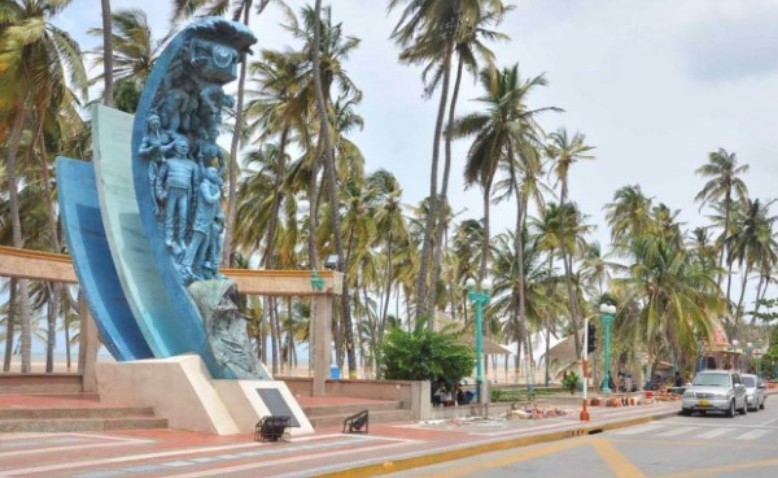
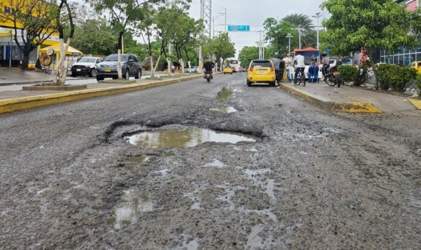

01 · NUESTRO ENTORNO
TECNOLOGÍA AL SERVICIO DE LA CIUDAD
Una Riohacha más
Una Riohacha más
segura y conectada.
Reporta baches y fallas en el alumbrado público. Tu reporte ayuda a identificar los puntos críticos y a construir una ciudad que responde.
Participación ciudadana · Datos georreferenciados
MONITOREO URBANO● EN VIVO*

RIOHACHA · LA GUAJIRA !⌁0REPORTES REGISTRADOS
0POR ATENDER
0RESUELTOS
✦ Tu ciudad, tu voz
01IdentificaDetecta una falla en tu sector.
02ReportaAdjunta foto y ubicación.
03Da seguimientoConsulta el estado del reporte.
GALERÍA MULTIMEDIA
01 / CONTEXTOLo que queremos transformar
Imágenes ilustrativas de los retos urbanos y de la visión de una ciudad conectada.

02 · INFRAESTRUCTURA VIAL
Reportar para reparar

03 · ESPACIO PÚBLICO
Calles mejor iluminadas

VISIÓN SMART CITY · INDUSTRIA 4.0
Datos ciudadanos que impulsan mejores decisiones.
La plataforma organiza reportes georreferenciados para facilitar la identificación de puntos críticos y, a futuro, integrar sensores IoT y analítica de datos.
Nota: estas imágenes son ilustrativas y fueron creadas para el prototipo. Para la entrega final, reemplázalas por fotografías propias de puntos críticos reales de Riohacha, como plantea la propuesta.
PARTICIPACIÓN CIUDADANA
01 / REPORTEReporta una incidencia
Cuéntanos qué sucede. Entre más precisa sea la información, más útil será el reporte.
TRANSPARENCIA Y SEGUIMIENTO
02 / MAPA PÚBLICOIncidencias en la ciudad
Consulta los reportes registrados y su estado actual.
Reportes recientes
Actualizados en este dispositivoINFORMACIÓN PARA DECIDIR
03 / ESTADÍSTICASLa ciudad en datos
Un resumen de las incidencias registradas en el prototipo.
Total de reportes0Incidencias registradas
Pendientes0Esperan revisión
En revisión0En proceso de atención
Resueltos0Marcados como atendidos
VISIÓN SMART CITY
De los reportes a la prevención.
La información histórica puede ayudar a identificar zonas críticas, priorizar mantenimiento y, en una futura etapa, integrar sensores IoT en luminarias inteligentes.
⌁
GESTIÓN INTERNA · DEMOSTRACIÓN
Panel de administración
Actualiza el estado de los reportes recibidos en este navegador.
| Reporte | Tipo | Sector | Fecha | Estado | Acción |
|---|
Este panel no tiene autenticación ni conexión con una entidad pública. Es una vista demostrativa para el proyecto académico.